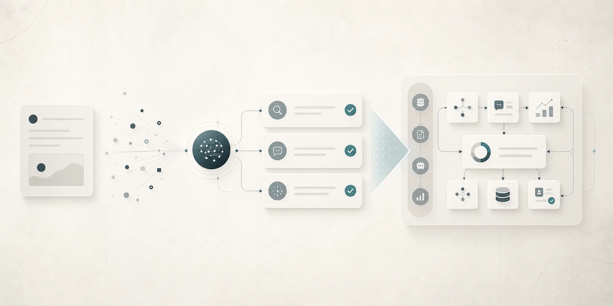
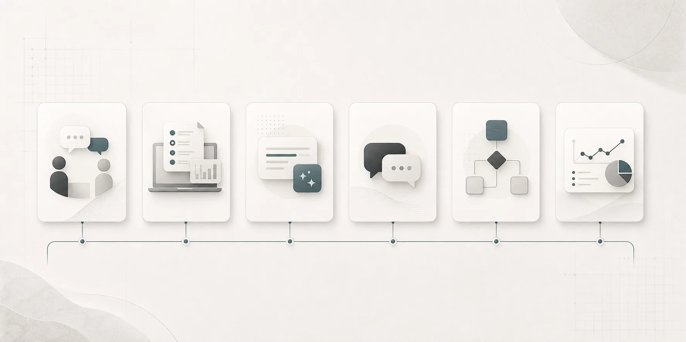
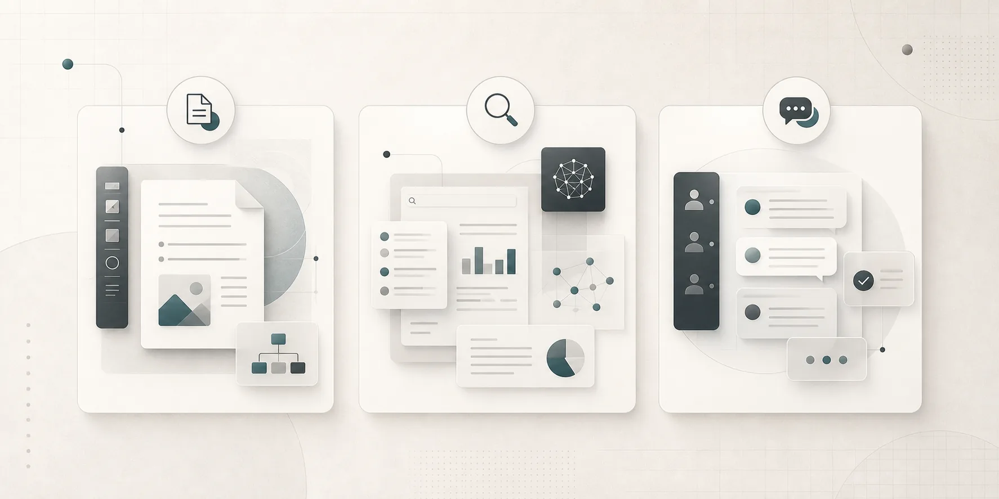
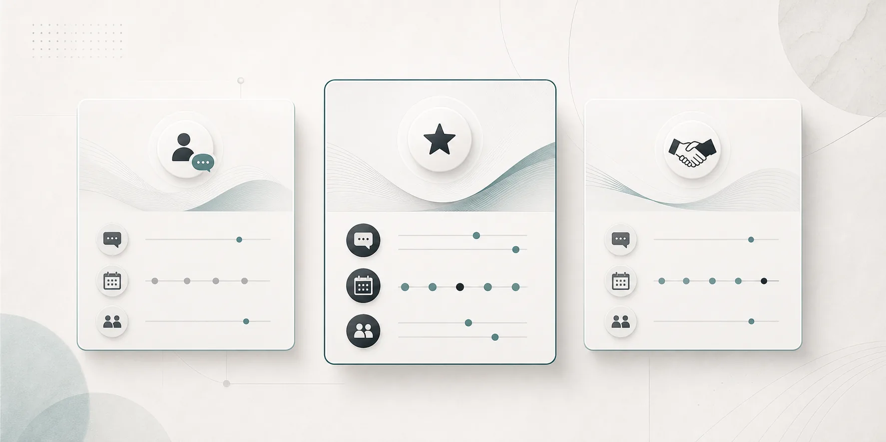
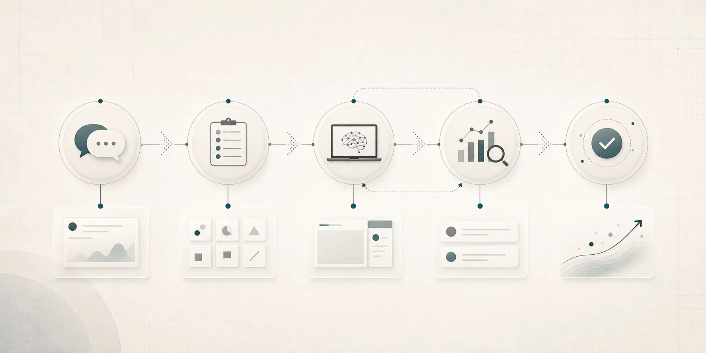
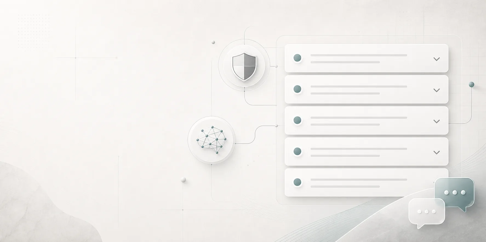

AIを、あなたの実務で
使える形にする。
個人事業主・フリーランス・独立を考える会社員向けに、相談者の業務へ完全に合わせたAI活用方法を一緒に作ります。単発相談から継続伴走まで柔軟に対応します。
AIを触ってみた。
でも、実務でどう使うか分からない。
- 忙しくてAIを学ぶ時間が取れない
- 自分の仕事にどう使えばいいか見えていない
- 試しても、思ったような成果物にならない
- 一人で学んでも継続できず、実務に定着しない
一般論ではなく、
あなたの仕事を題材にする。
一番やりたいこと、改善したいことを持ち込んでください。実際の業務をもとに一緒に作り、試し、修正しながら、自分専用のAI活用方法へ落とし込みます。
完全オーダーメイド
業種や作業内容に合わせて、使い方を一緒に設計します。
一緒に作る
画面を見ながら成果物を作り、使える形まで整えます。
検証を繰り返す
出力結果を確認し、改善しながら精度を上げます。
自分専用にする
今後も使い回せる手順や型として残します。

必要なときに、必要な分だけ。
単発でも継続でも相談できます。
対面サポート
基本は対面で、実務画面を見ながら進めます。
オンライン対応
遠方や時間の都合に合わせてオンラインでも対応します。
90〜120分
1回の目安は90〜120分。内容に合わせて調整します。
チャット相談
サポート中の疑問はチャットで無制限に相談できます。
AIエージェント活用
CodexやClaude Codeなど、実務に合わせて活用します。
自由なテーマ
資料作成、調査、文章作成、業務整理などから選べます。

動画講座でも、一般的な使い方説明でもない。
- 汎用的な使い方を学ぶ
- 自分の仕事への落とし込みは自分で行う
- 分からない部分で止まりやすい
- 相談者の実務を題材にする
- 一緒に作って、その場で検証する
- 自分専用の活用方法として残す
やりたいことから逆算して、
AIの使い方を組み立てる。
資料・文章作成
提案文、説明資料、記事、投稿文などを実務に合わせて作ります。
調査・要約
情報収集や比較、要点整理を短時間で進める型を作ります。
事務作業の整理
繰り返し作業や確認作業を半自動化する方法を考えます。
AIエージェント活用
CodexやClaude Codeなどを、目的に合わせて実務へ取り入れます。

空いた時間を、
次の受注につなげる。
個人の士業
事務作業を半自動化し、空いた時間で受注件数が1.5倍に。
SNS運用フリーランス
投稿作成や周辺業務を時短し、対応できる案件数が増加。
5万円から、
必要な内容に合わせて設計します。
初回無料相談
60分
個別サポート
5万円〜
契約期間
自由
業務量やサポート範囲によって料金は変動します。単発相談も可能です。予算に合わせた相談にも柔軟に対応します。

相談から実務への定着まで、
目の前の課題から始めます。
- 公式LINEから相談
- 初回無料相談で課題整理
- やりたいこと・改善したいことを決定
- 一緒に作成・検証
- 自分専用の活用方法として整理

よくある質問
AIを使ったことがなくても大丈夫ですか？
はい。現在の理解度に合わせて、実務で使うところから一緒に進めます。
実績のない個人でも申し込めますか？
はい。これから独立したい方や、これから業務を整えたい方も相談できます。
セキュリティ面は大丈夫ですか？
扱う情報の内容に配慮し、相談内容に合わせて利用範囲や運用方法を整理します。
全国対応できますか？
はい。基本は対面ですが、オンラインでも対応可能です。
使いたいAIツールが決まっていても相談できますか？
はい。CodexやClaude Codeを中心に、使いたいツールに合わせた相談も可能です。

まずは、あなたの仕事のどこにAIを使えるか。
一緒に見つけるところから始めませんか。
初回相談では、今やりたいことや改善したい作業を伺い、AI活用の進め方を整理します。